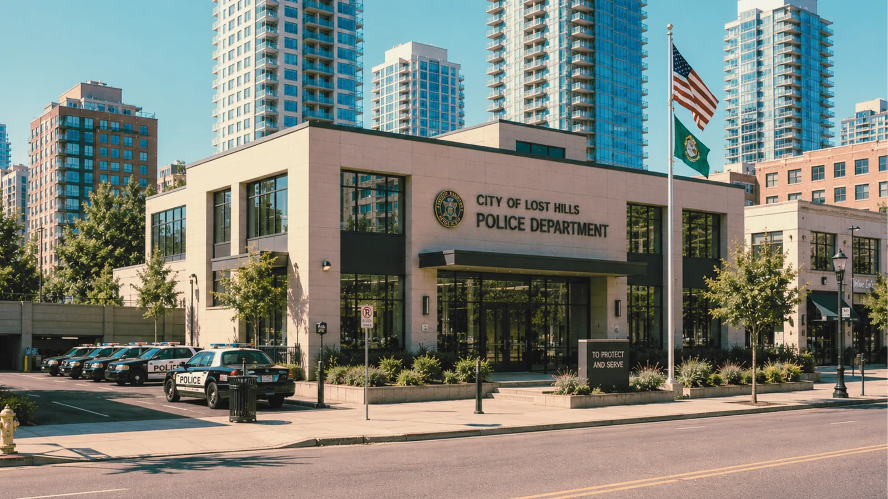
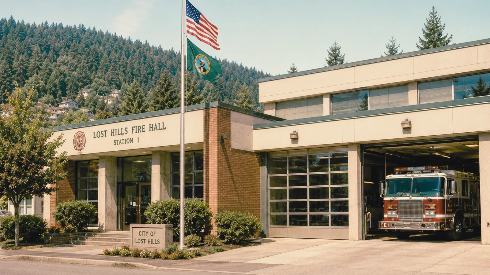
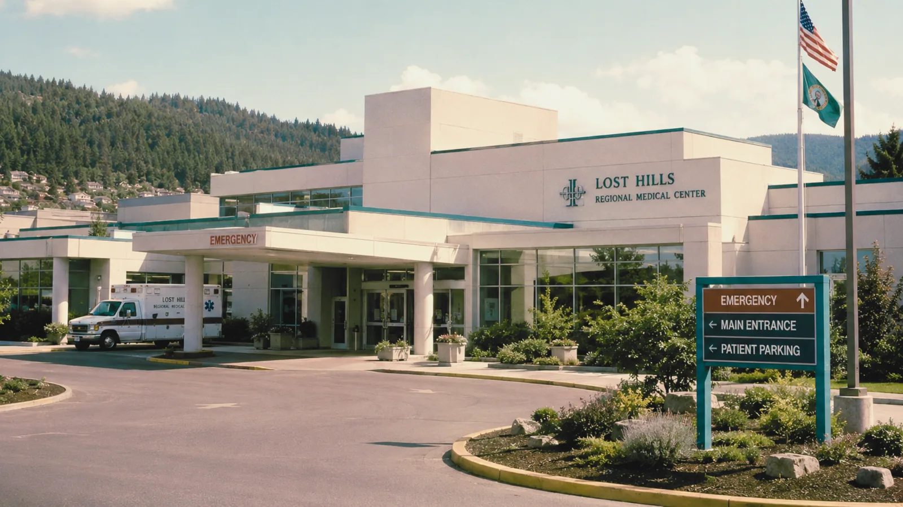

[#]Police / Fire / Emergency Medical Services

date unverified')" />
date unverified')" />
date unverified')" />Lost Hills Police, Fire, and Emergency Medical Services provide coordinated emergency response throughout the city, surrounding forest roads, the Catfish Lake corridor, Lost Hills Tunnel, Sutter Gorge access routes, and the Shadewater East Campus area.
Dispatch Routing Test — SASC Week
Beginning May 17, Emergency Services is participating in limited dispatch routing trials connected to the City Service Reform Program. All calls continue to be monitored by trained personnel. The routing trial is scheduled to conclude at the end of SASC week.
Public Telephone Location Errors
Emergency operators are aware of intermittent location errors from public telephones and payphones throughout the city. Callers should confirm location verbally, especially when calling from:
- Benthic Gas & Food Mart payphones
- Sezzler Hotel lobby phones
- Catfish Lake access area payphones
- Public roadside phones along Blackpine Road
If a phone you are using does not appear to be connecting normally, state your location clearly and remain on the line. Do not unplug or remove payphone housings.
Wildlife Reports — East Districts
Police have received several reports of unfamiliar animal sounds near Blackpine Road, East Service Road, and the forest access routes east of the Lost Hills Tunnel. No public safety threat has been confirmed at this time.
Residents are advised to avoid wooded service roads and unmarked forest paths after dark. Report unusual wildlife to dispatch by phone. Do not approach or attempt to locate the source of unfamiliar sounds in forested areas without contacting Police first.
Recovered Vehicle Advisory
Fire & EMS Equipment
Fire and EMS equipment observed outside designated service areas should be reported immediately to dispatch or the Clerk's Office. Do not attempt to relocate hoses, stretchers, oxygen tanks, medical devices, or emergency signage. Equipment found in wooded areas or along unmarked service roads should be considered part of an active inventory review.
Shadewater East Campus Access
Emergency access to the Shadewater East Campus and adjacent service roads is coordinated through Shadewater Security and City Dispatch. Residents and visitors should not enter Shadewater service roads, field equipment zones, or marked research corridors.
In the event of an emergency on or near the Shadewater campus, call Lost Hills dispatch at 555-0911 and state your location clearly. Dispatch will coordinate with Shadewater Security.
Department Directory
| Department | Non-Emergency | Notes |
|---|---|---|
| Lost Hills Police | 555-0100 | Serving city limits and designated forest corridors |
| Lost Hills Fire | 555-0200 | Station 1: Civic Center Way · Station 2: North Plaza |
| Lost Hills EMS | 555-0300 | Response times may vary during CityNet routing trial |
| Dispatch (combined) | 555-0911 | 24-hour; confirm location verbally during SASC week |
| Mercer County Sheriff | 555-0400 | Jurisdiction: unincorporated areas and highway |
| Shadewater Security | via city dispatch | East Campus and adjacent service roads only |